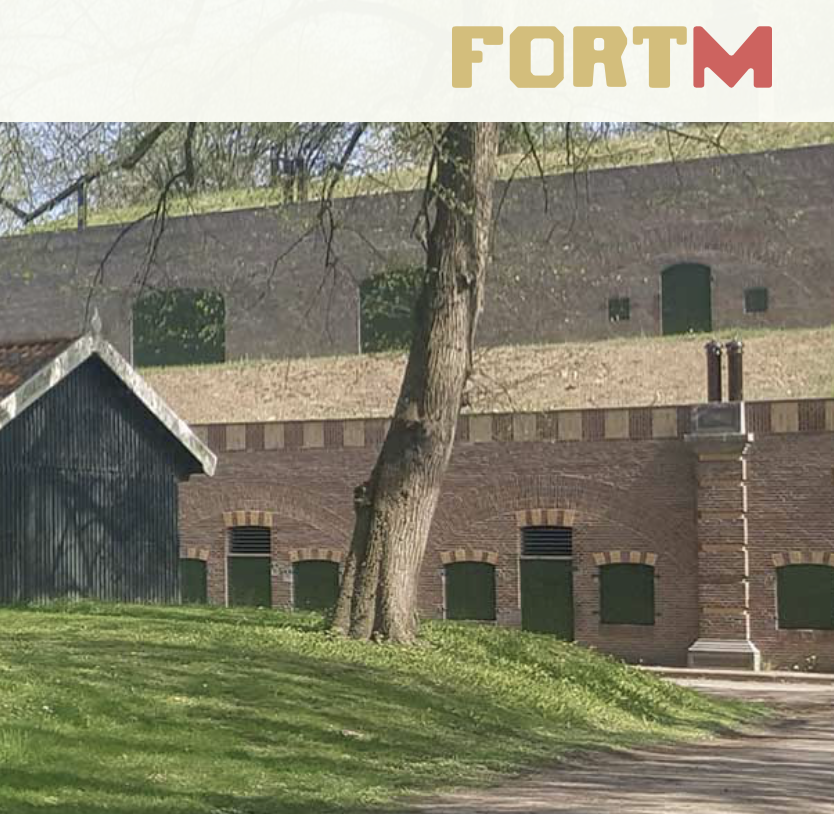
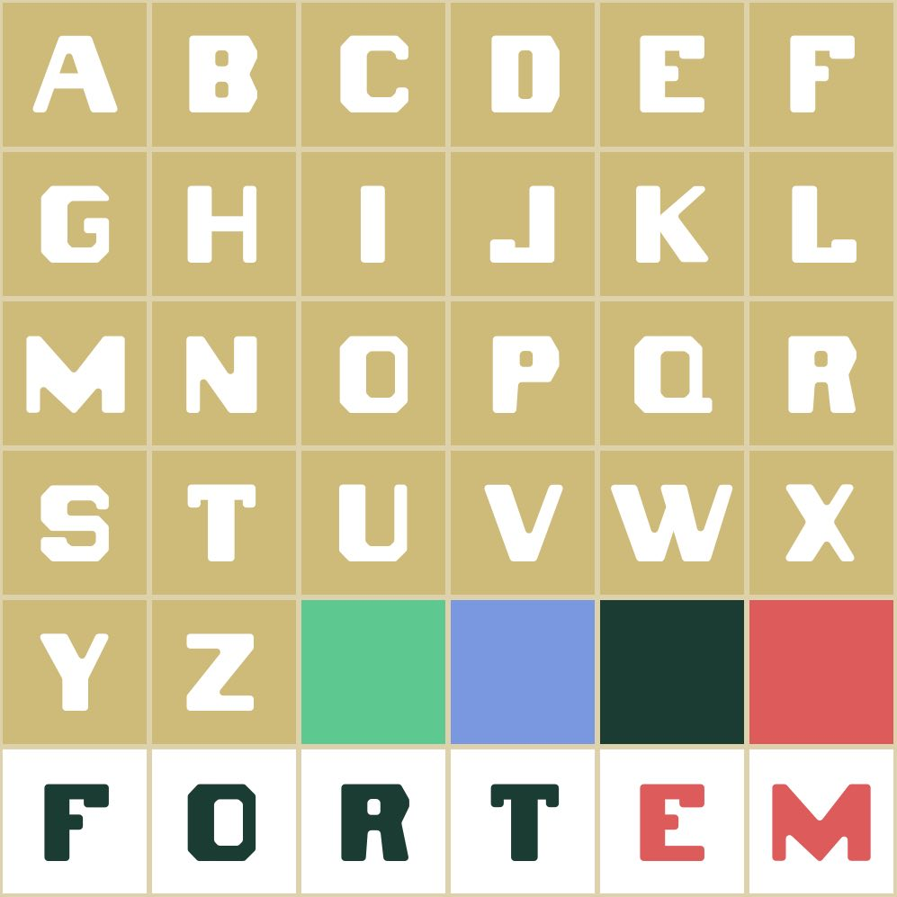
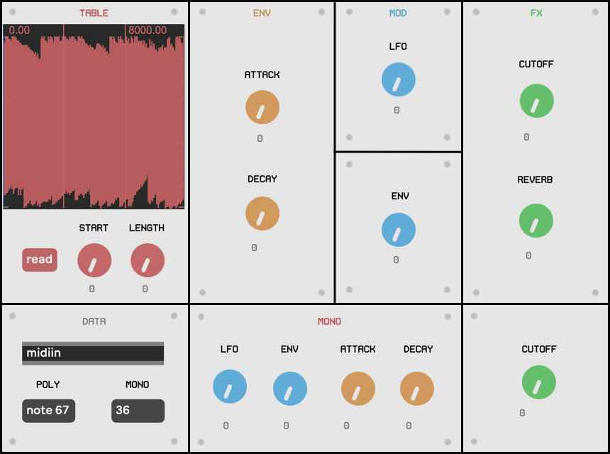
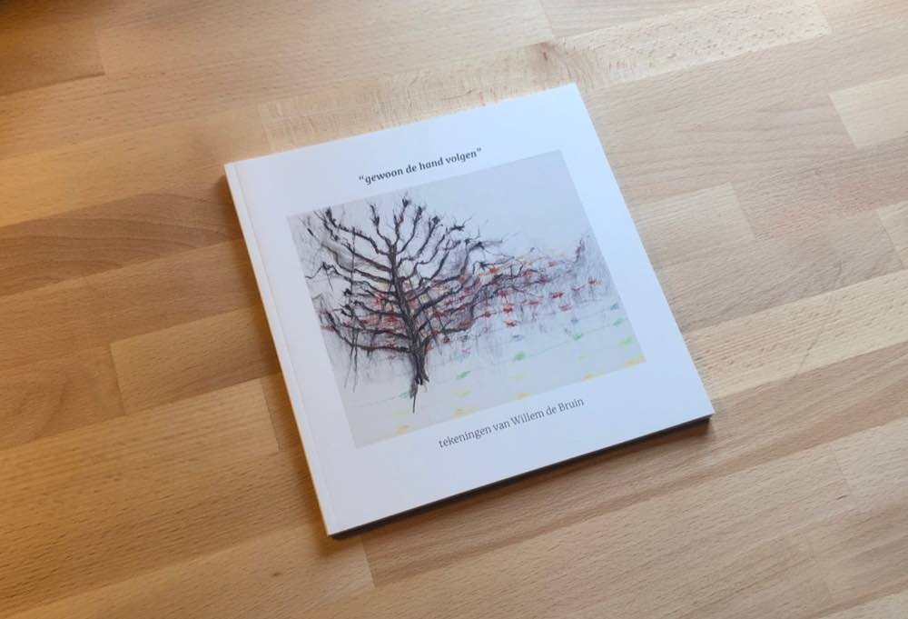
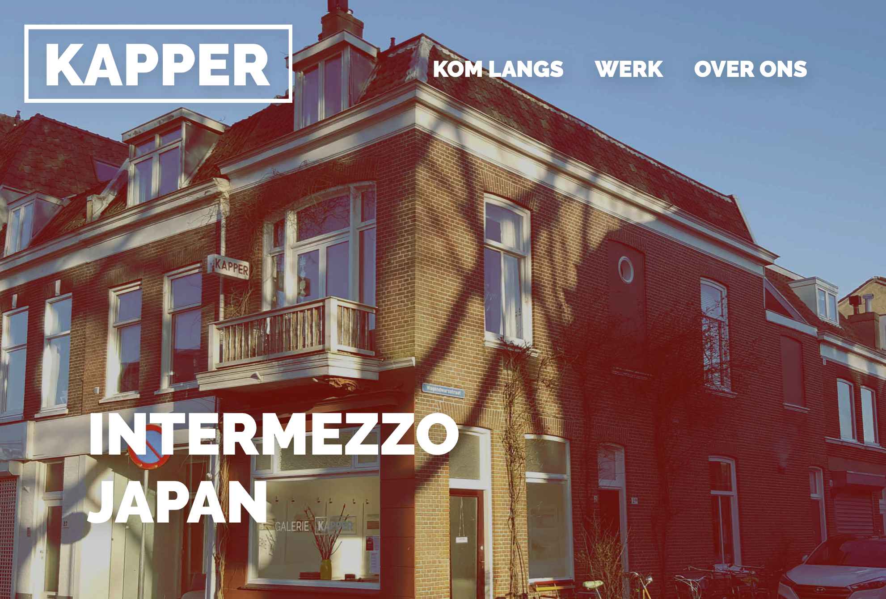
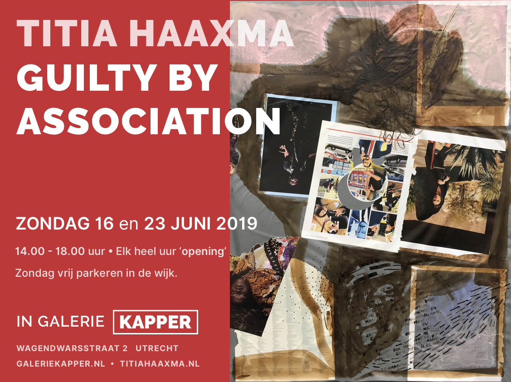

I have experience designing websites, flyers, posters, bussiness cards etc.
Here are some recent examples:


fort‑m
In 2018 I did the branding for fort-m, an art class tought at various forts around Utrecht.
I made a custom font called "fortem", inspired by the typography seen on the barracks of these forts. I also
made the website, flyers and other marketing material.
fort-m.nl

UI Design
This is an example of a synthesiser ui design I made for a school project. The aestetic is the derived from
modular synths with a modern twist. I tried to make different section as clear as possible by using different
colors as the virtual synth was going to be manipulated live during a performance.

Booklet
This is a book I made showcasing the artworks throughout the carrier of Willem de Bruin, my father, who passed
away in 2017.
The book was designed in InDesign and sold as a limited print.


galerie kapper
I've done branding, web(design and development) and flyer design for galerie kapper. An art gallery near the
center of Utrecht.
galeriekapper.nl